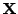

Gan_Camera CameraD;
Gan_Vector3 v3x, v3xu;
/* build camera with one parameter of radial distortion */
gan_camera_build_radial_distortion_1 ( &CameraD,
/* ZH FY FX Y0 X0 */
100.0, 700.0, 500.0, 150.0, 100.0,
/* K1 */
0.001 );
/* build image point x assumed to have distortion */
gan_vec3_fill_q ( &v3x, 50.0, -80.0, 100.0 );
/* remove distortion from image point x --> xu */
gan_camera_remove_distortion_q ( &CameraD, &v3x, &v3xu );
removes the distortion from the image point x, producing an
undistorted point xu. Given the camera 3D point  that projects
onto x, xu is defined as the point on the image onto which the
equivalent linear camera (i.e. the linear camera with the same
/* remove distortion from image point x --> xu in-place */
gan_camera_remove_distortion_i ( &CameraD, &v3x );
The reverse is to add distortion to an image point. Given a non-linear camera, this means converting a point projected with the equivalent linear camera to a point projected with the non-linear camera:
/* build image point xu assumed to have NO distortion */
gan_vec3_fill_q ( &v3xu, 50.0, -80.0, 100.0 );
/* add distortion to image point xu --> x */
gan_camera_add_distortion_q ( &CameraD, &v3xu, &v3x ); /* OR */
gan_camera_add_distortion_i ( &CameraD, &v3xu ); /* in-place */
The single precision versions of these routines are
Gan_Camera_f CameraF;
Gan_Vector3_f v3x, v3xu;
/* build camera with one parameter of radial distortion */
gan_cameraf_build_radial_distortion_1 ( &CameraF,
/* ZH FY FX Y0 X0 */
100.0F, 700.0F, 500.0F, 150.0F, 100.0F,
/* K1 */
0.001F );
/* build image point x assumed to have distortion */
gan_vec3f_fill_q ( &v3x, 50.0F, -80.0F, 100.0F );
/* remove distortion from image point x --> xu */
gan_cameraf_remove_distortion_q ( &CameraF, &v3x, &v3xu ); /* OR */
gan_cameraf_remove_distortion_i ( &CameraF, &v3x ); /* in-place */
/* build image point xu assumed to have NO distortion */
gan_vec3f_fill_q ( &v3xu, 50.0F, -80.0F, 100.0F );
/* add distortion to image point xu --> x */
gan_cameraf_add_distortion_q ( &CameraF, &v3xu, &v3x ); /* OR */
gan_cameraf_add_distortion_i ( &CameraF, &v3xu ); /* in-place */